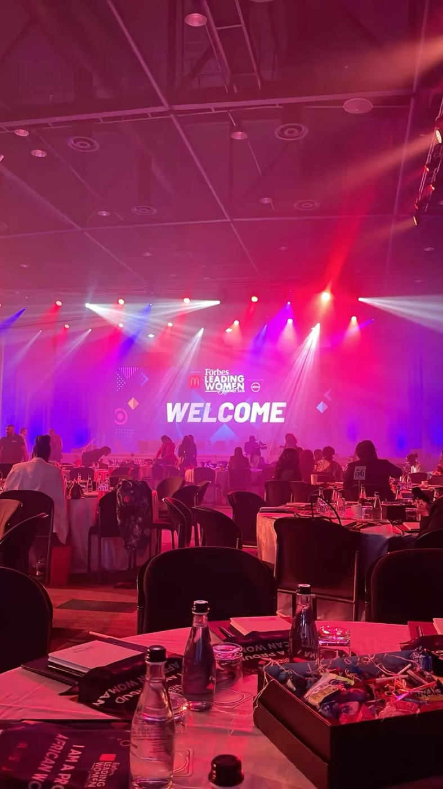
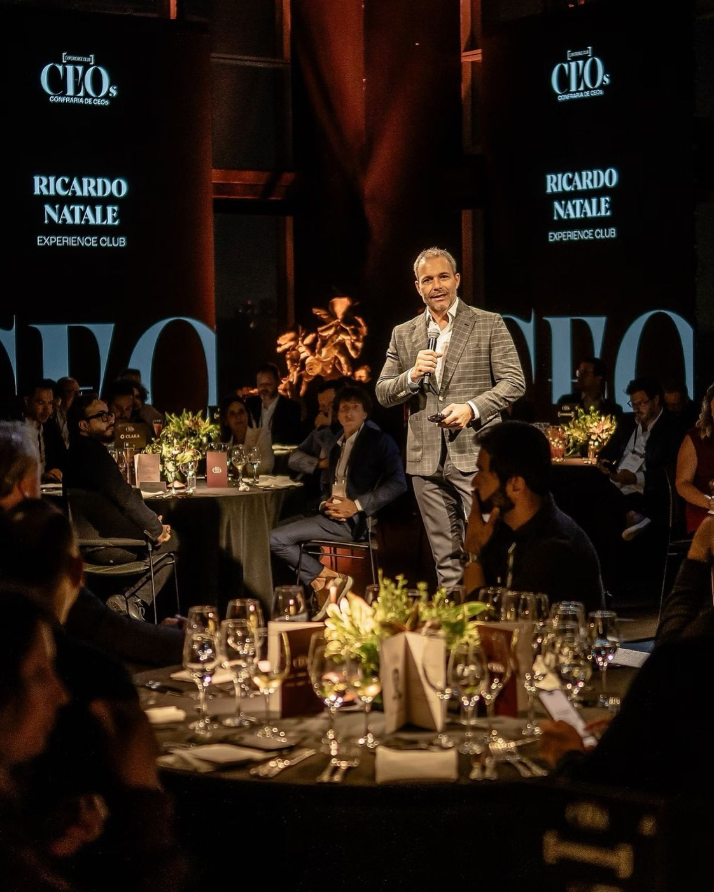
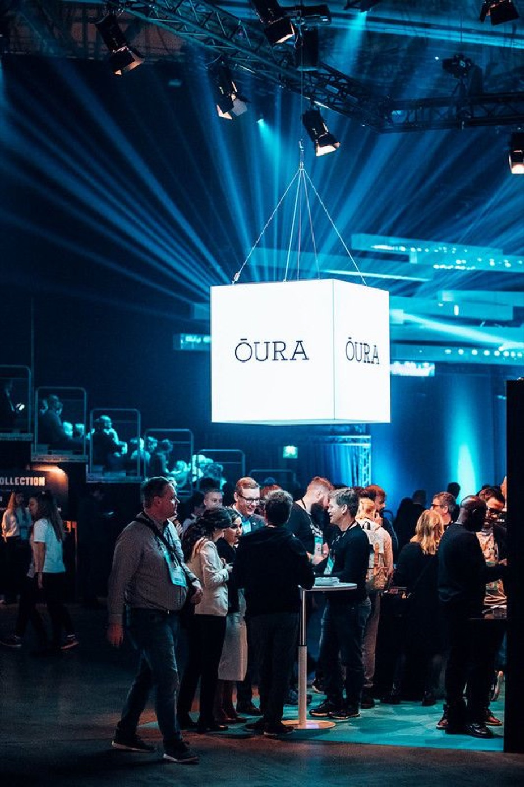

Corporate Event Venue
Phoenix's home for corporate productions: conferences, galas, award nights, holiday parties and full themed company events, serving Glendale, Scottsdale and the entire Valley.
A corporate event venue with the bones of a production house: up to 2,250 guests, a built-in stage, in-house sound and programmable lighting, and full-service catering for themed events of up to 2,000. DJs, bandas and mariachi booked through us, authentic Mexican catering in-house or any food vendor you choose, and busing and shuttles for your guests. Every experience is customizable, priced per quote and request. One room, one team, one invoice.
Corporate Productions
Conferences, summits, product launches and award nights with staging, A/V and lighting handled in-house, not rented in.
Catering & Bar
Authentic Mexican catering done in-house, plus a licensed bar. Prefer your own caterer? We work with any food vendor you want.
Signature Themes
Island Escape, Mini Mexico, Wild West or a custom world built inside the venue: decor, entertainment and catering included.
Planner Friendly
Site visits 7 days a week, straight answers on specs and layouts, and one point of contact from tour to load-out.
Security & Parking
Professional on-site security at every event and free lit parking at the door for your whole guest list.
Easy To Reach
Just off Indian School Rd, minutes from the I-10 and Loop 101: a quick trip from Glendale, Scottsdale and all of metro Phoenix.
Entertainment, Booked
DJs, bandas and mariachi bands booked directly through Stratus and matched to your event. One conversation, the whole show handled.
Busing & Shuttles
Guest transportation arranged through the venue: shuttles and buses for corporate groups, quoted with your event.
Built Per Request
Experiences are customizable end to end: decor, entertainment, menus and transport, all priced per quote and request.



Pick a World
Themed corporate events with full catering for up to 2,000 guests. Tap a theme to start your quote.
Good to Know
How many guests can Stratus Event Center hold for a corporate event?
The main hall holds up to 2,250 guests, and themed corporate events with full catering are staged for up to 2,000 guests. The floor is fully transformable, so the same room scales from an intimate seated dinner to a company-wide production.
Does Stratus Event Center provide catering?
Yes. Authentic Mexican catering is done in-house with a licensed bar, and we work with any outside food vendor you prefer, so cultural and specialty menus are never a problem. Menus are matched to your event and quoted per request.
Can Stratus book DJs and live entertainment for a corporate event?
Yes. DJs, bandas and mariachi bands are booked directly through Stratus and matched to your event, so entertainment lands on the same quote as the room, catering and production.
Does the venue offer guest transportation?
Yes. Busing and shuttle service for corporate groups can be arranged through the venue and is priced with your event quote.
Can we customize the experience?
Fully. Decor, themes, entertainment, menus and transportation are all customizable per quote and request, from a seated dinner for a leadership team to a themed company party for 2,000.
Does the venue have in-house A/V and production?
Yes. Stratus has a built-in stage, professional sound and programmable lighting, so corporate productions, award nights and brand activations are staged in-house without renting outside equipment.
Where is Stratus Event Center and is there parking?
Stratus is at 4344 W Indian School Rd, Ste 32, Phoenix, AZ 85031, minutes from the I-10 and Loop 101. Every event includes on-site lit parking and professional security.
What areas does Stratus Event Center serve?
Companies and planners across the Valley: Phoenix, Glendale, Scottsdale, Peoria, Avondale, Surprise and Litchfield Park. The venue sits on Phoenix's west side with easy freeway access from every direction.
How do I check dates or tour the venue?
Call or text , email Stratuseventcenteraz@gmail.com, or book a tour online. Tours run 7 days a week by appointment.